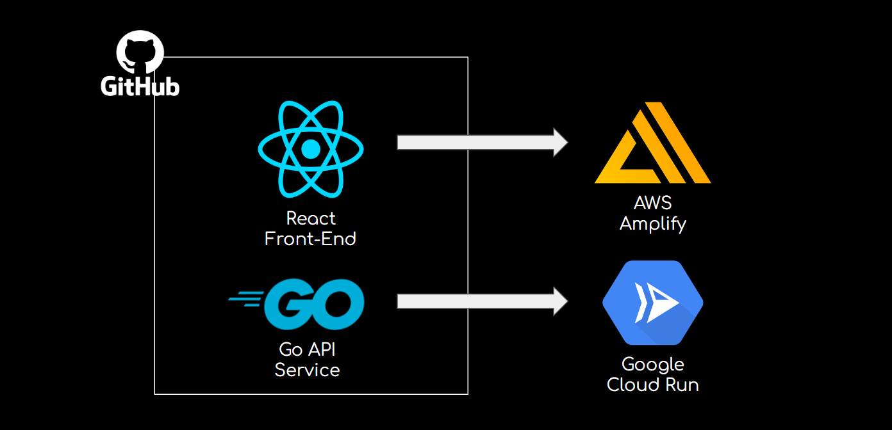

<div>
  <div class="content-container">
    <div class="content">
      
      <br />
      <br />
      <p>
        I organized the Go API service and the React frontend app into a
        monorepo on GitHub. From this setup, I deployed the React application
        via AWS Amplify and the backend service as a Docker image through Google
        Cloud Run, enabling streamlined continuous deployment for both.
      </p>
      <br />
    </div>
  </div>
</div>
